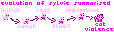
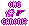

the cat
as expected, her design changed over time, the first feature being a green bandana, which is now no longer as important as it was before, for some reason..
i do sometimes wish i changed her fur color.. probably not going to do that in the future either

kitties
lore!?!?
yet somehow extreme kitty violence exists, heck, i think even cat magic was a thing at some point
for some weird reason i like having her in some stories.. which in theory means sylvie appears more than once in one timeline, as if the consistency there wasnt bad enough already
go thank your favourite higher power (if any) for not making me a writer

pew
ref
probably should fix that..someday